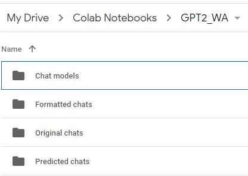

gpt2 Whatsapp Simulation
GitHub Check out the code on GitHubFine tuned Open AI’s GPT2 on Whatsapp Chats to generate conversations. Works for both group chats and private chats.
The following steps are for running a Colab notebook, you can also run it locally. In that case it’d take longer since you don’t get Colab’s GPUs and you’d also have to replace the google drive folders with local ones.
There are 4 versions of the pretrained model. I have used the second largest one (774M, Large, ¬3GB). Colab (free version) was frequently crashing with the extra-large model. I won’t be describing GPT-2 in detail, instead I’d encourage you to check this out if you are not familiar with it - https://openai.com/blog/better-language-models/
How to use:
- Export chats from Whatsapp mobile application. This will give you a file with a name like
WhatsApp Chat with Sushil Khairnar.txt

.jpeg)
-
Create the following hierarchy in your google drive 
-
Upload the
original_chat.txtin your google drive in the folderOriginal Chats -
Run the jupter notebook on Google colab.
-
Check your output (
gpt2_gentext_sushil_khairnar_20200802_084751.txt) in thePredicted Chatsfolder
I have intentionally cleared outputs of the cells before pushing the notebook to this repository, since both the original and predicted chats should be private. But rest assured, you’ll be seeing some really interesting (and probably disturbing :P) results.
Misc
-
The training checkpoints can be backed up into
Chat modelsin case you want to come back and use the fine-tuned model later. This code cell is commented by default since the checkpoint size is >3GB. -
The copy of files (
generated_text) from Colab local runtime -> GDrive is a little slow, give it a couple of minutes -
Drop a mail at swahareddy@gmail.com for any comments.
Check out my other projects!🌟
I'd love to know to know what you thought of this